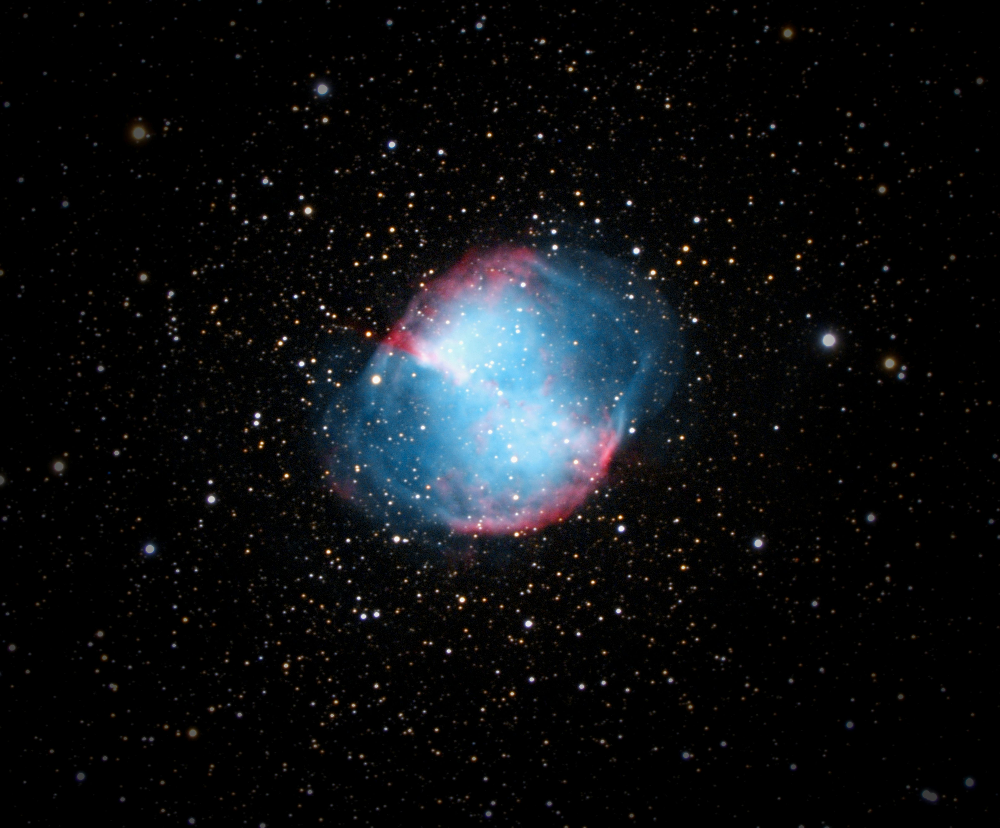
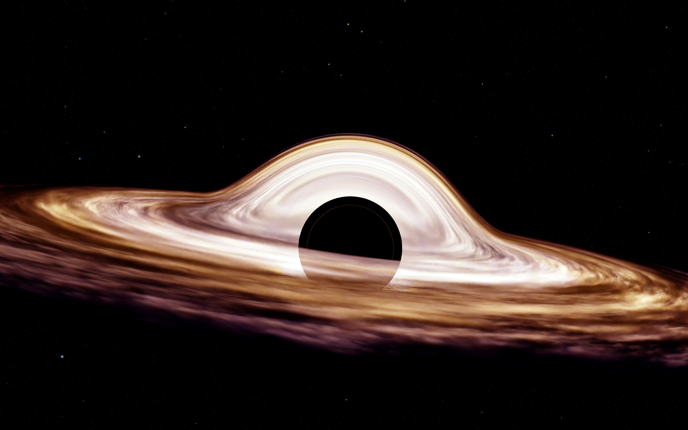

Cosmic Nurseries
Nebulae are gargantuan clouds of dust and gas scattered throughout deep space. Acting as celestial workshops, these vibrant structures are where dying stars cast off their outer layers and new stars are ignited into being from collapsing pockets of matter.

Gravity’s Shadow
Black holes are regions of space where gravity is so intense that nothing—not even light—can escape. Formed from the remnants of massive collapsed stars, these invisible giants warp the very fabric of time and space, standing as the universe’s most profound and mysterious frontiers.

Cosmic Leftovers
Asteroids are rocky, airless remnants left over from the early formation of our solar system roughly 4.6 billion years ago. Mostly found orbiting in the belt between Mars and Jupiter, these "space potatoes" range from tiny pebbles to massive boulders that provide a direct link to our planetary origins.